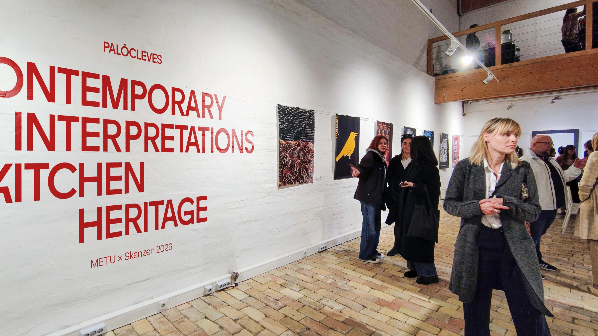
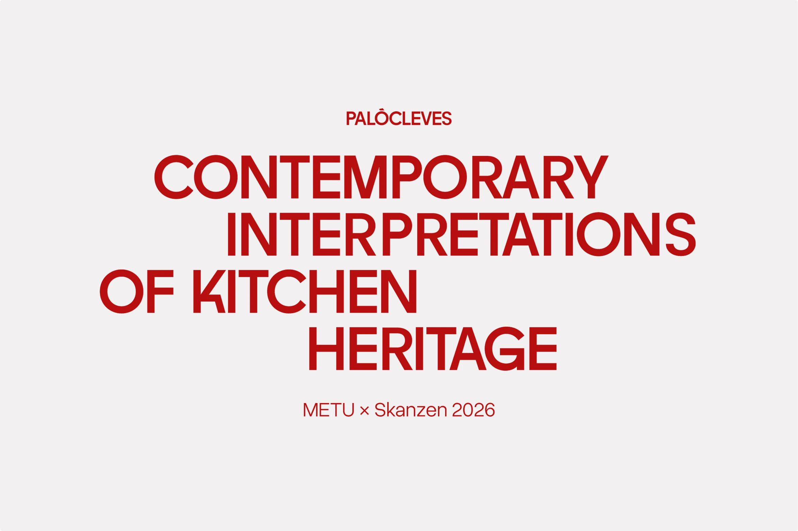
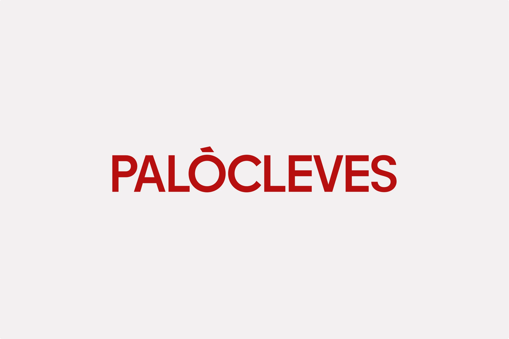
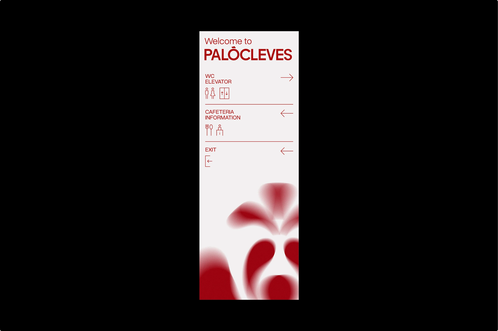
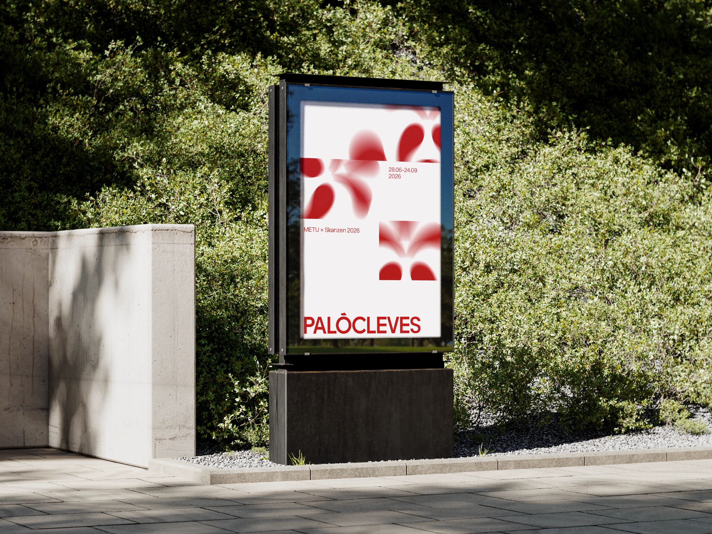
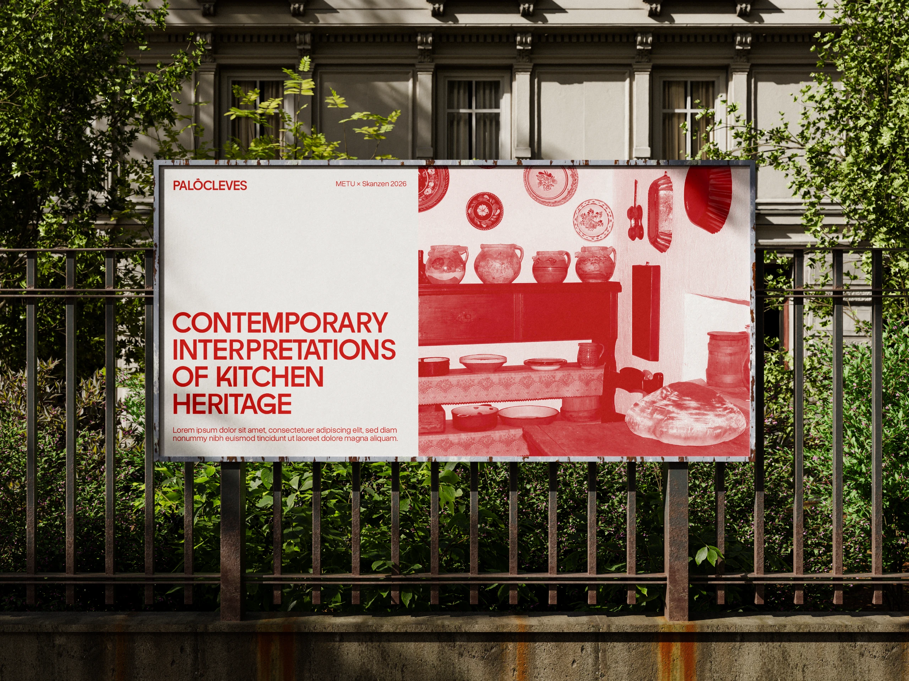
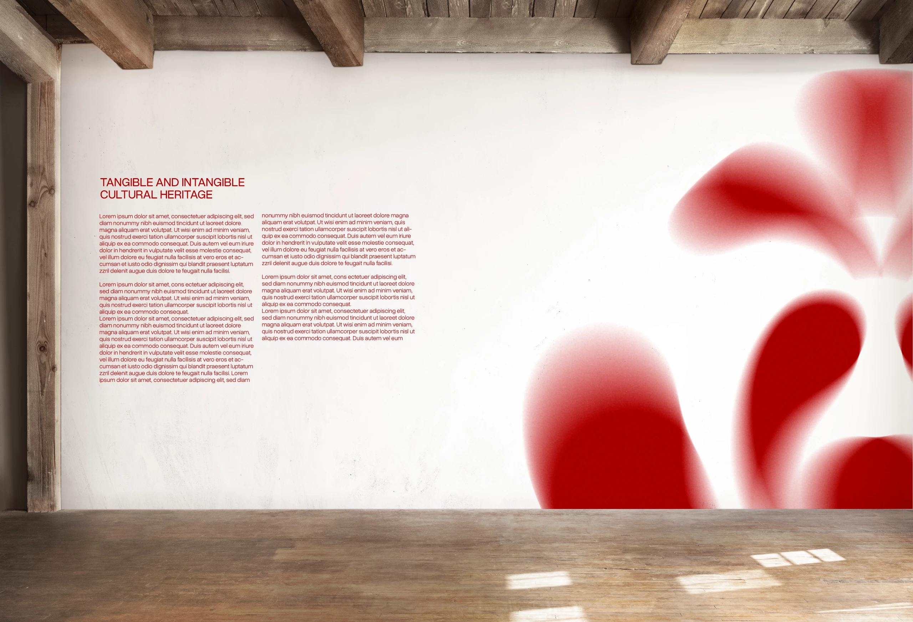
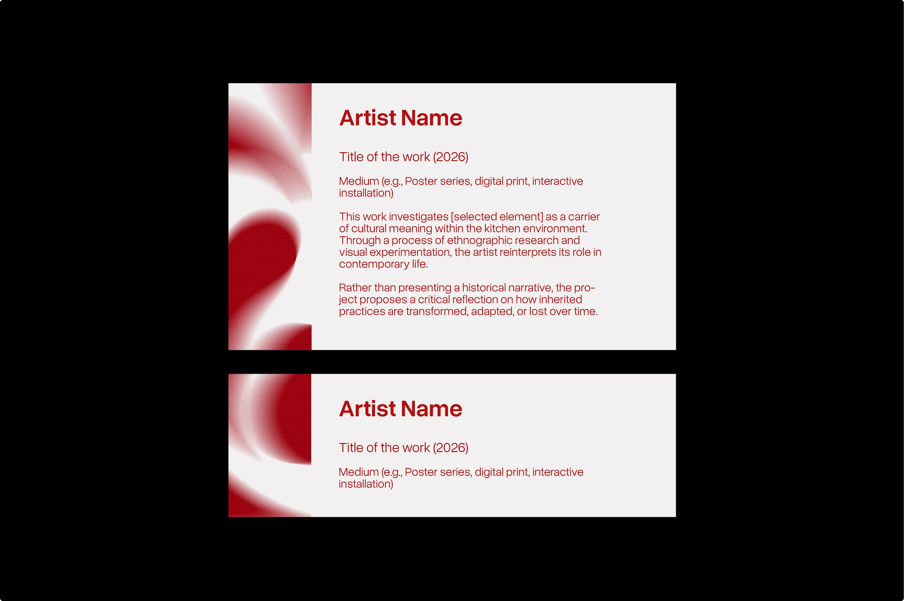
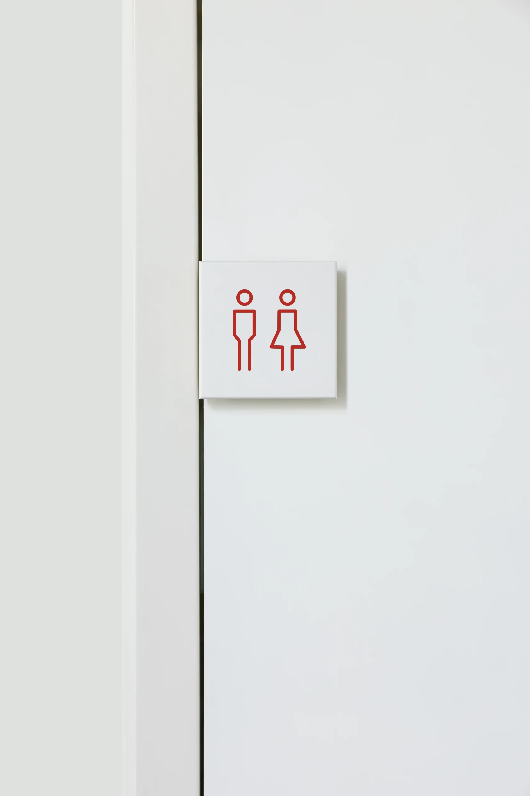
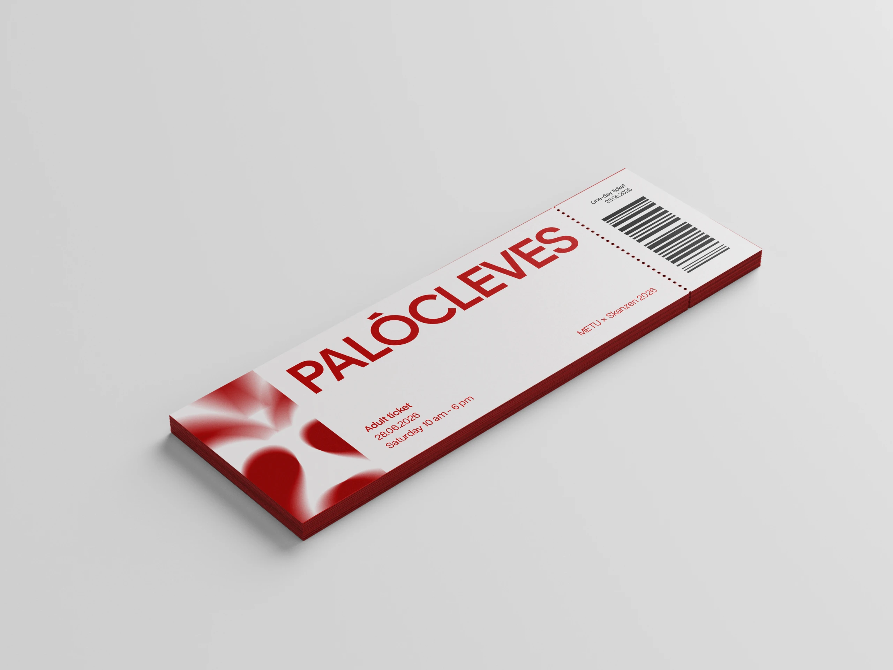

PALÓCLEVES
02 / 04Brand / Exhibition design · 2026
- Visual Identity
- Exhibition Design
- Brand System
- Poster Design
- Wayfinding
Palócleves is a visual identity project for an exhibition exploring the kitchen as a cultural and social system. The project was developed during my Erasmus exchange at Budapest Metropolitan University, within the context of a corporate identity course.
The concept is based on the idea of heritage as something active, unstable, and constantly reinterpreted. Starting from a traditional Hungarian floral ornament, I developed a flexible graphic system where the motif is fragmented, scaled, and repeated across different applications.
Instead of using the ornament as decoration, the identity transforms it into a contemporary visual language that reflects the exhibition’s main theme: heritage is not fixed, but reshaped through interpretation.
The project includes a typographic logo, poster design, outdoor banners, exhibition wall graphics, artwork labels, pictograms, wayfinding elements, and tickets. A reduced red and white palette reinforces the connection with the physicality of the kitchen: heat, food, materiality, and labor.




















